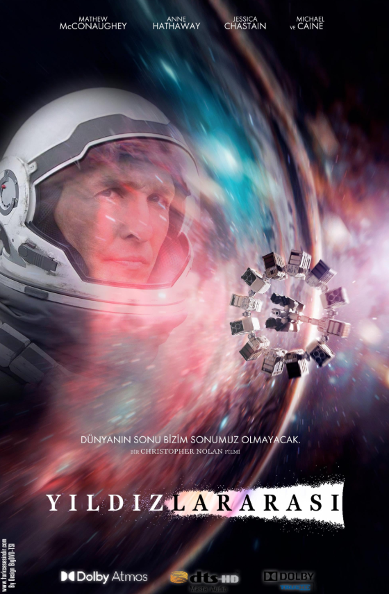

Uzay, zaman ve insan ruhunun en büyük yolculuğu.

Interstellar; bilim kurgu, kalp kırıklığı, cesaret ve fedakârlık duygularını kusursuz bir görsel anlatımla birleştirir. Her kare, insanın gökyüzüne bakma biçimini değiştirir. Hans Zimmer’in muazzam müzikleriyle birlikte izleyici, yalnızca bir film değil, bir çağ açan deneyim yaşar.